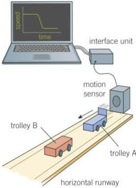
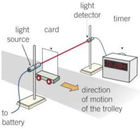

click diagram to play
Therefore,
,
where = the time of contact between
A and B, and = the mass of ball B.
Because the two forces are equal and opposite to each other, .
Therefore, .
Cancelling on both sides gives
Rearranging this equation gives
Therefore,
the total final momentum = the total initial momentum
Hence the total momentum is unchanged by this collision, that is, it is conserved.
Note:
If the colliding objects stick together as a result of the collision, they have the same final velocity. The above equation with as the final velocity may therefore be written


Testing conservation of momentum
Figure 3a shows an arrangement that can be used to test conservation of momentum using a motion sensor linked to a computer. The mass of each trolley is measured before the test. With trolley B at rest, trolley A is given a push so it moves towards trolley B at constant velocity. The two trolleys stick together on impact. The computer records and displays the velocity of trolley A throughout this time.
The computer display shows that the velocity of trolley A dropped suddenly when the impact took place. The velocity of trolley A immediately before the collision, , and after the collision, , can be measured. The measurements should show that the total momentum of both trolleys after the collision is equal to the momentum of trolley A before the collision. In other words,